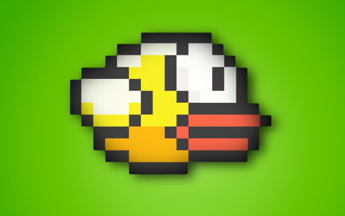

Swipe to move all tiles. When two tiles with the same number touch, they merge into one.
Get to the 2048 tile, and reach a high score!Click to read more
Free Video Downloader
The program will download video from any site that you can snag a URL from.
Except from youtube.Click to read moreRunkeeperJoin the more than 28 million people who are using RunKeeper to turn their phone into a personal trainer in their pocket!
Track your runs, walks, bike rides, hikes, and more using the GPS in your iPhone. Click to read moreFlappy BirdFlap your wings to fly...Click to read moreSky Survival IslandTry yourself in Sky Island! With worldwide MULTIPLAYER!
You need to get the gun and survive.
Find hidden bonuses and weapons, they can help you to survive in the wild island.Click to read moreShazamShazam is the best way to identify music and TV. In seconds you’ll know the name of any song, or more about what you’re watching.
Touch to Shazam to start your journey. Click to read more